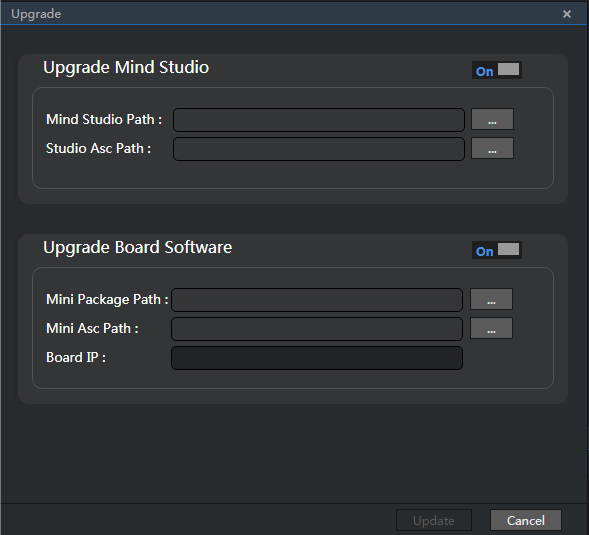
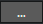
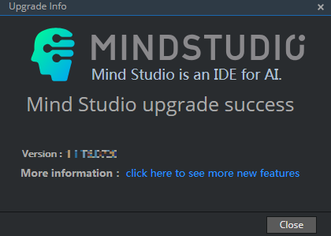

Performing Upgrade
NOTICE:
Perform the upgrade as the Mind Studio installation user. Before the upgrade, switch to the root user and run the add_sudo.sh script to add the sudo permission to the Mind Studio installation user. For details, see 3.a.
Choose Help > Upgrade. The Upgrade dialog box is displayed, as shown in Figure 1.
Figure 1 Upgrade dialog box
You can upgrade Mind Studio and Atlas 200 DK developer board separately or at the same time. If you click , the corresponding module is hidden or displayed. Table 1 describes the parameters on the Upgrade page.
Table 1 Parameters on the upgrade page
 NOTE:
NOTE:
If the Atlas 200 DK developer board is upgraded independently, Mind Studio does not stop.Click  next to Mind Studio Path, Studio Asc Path, Mini Package Path, and Mini Asc Path, select the upgrade packages and .asc files with the same name as the upgrade packages, respectively, enter the IP address of the developer board in the Board IP text box, and click update to upload the files, as shown in Figure 2.
Figure 2 Uploading the upgrade packages and verification files
 NOTE:
NOTE:
The package names displayed in the Mind Studio Path and Mini Package Path text boxes are examples only.After successful upload and verification, the dialog box as shown in Figure 3 is displayed. Click OK and the upgrade window is displayed. During the upgrade of Mind Studio and the developer board, as shown in Figure 4, the back-end services are disconnected and the front end is masked. Do not refresh or close the window during this phase. During the upgrade of the developer board only, the back-end services of Mind Studio are not be disconnected and the upgrade progress is displayed, as shown in Figure 5.
Figure 3 Message displayed after the package is uploaded and verified


After the upgrade is successful, Mind Studio is restarted. The Mind Studio login page is displayed, as shown in Figure 6.
Figure 6 Upgrade Success dialog box

After the upgrade is successful or the upgrade is canceled, close the dialog box shown in Figure 2. The redundant folders （upgrade and upgradeForLog） generated due to the upgrade by the Mind Studio background server will be automatically deleted.